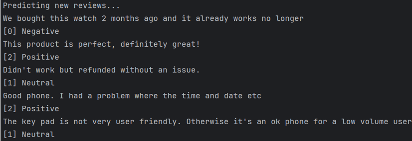

GitHub Repo: https://github.com/Callum-OP/Review-Sentiment-Classifier
University Assignment: Learning models capable of conducting sentiment classification. Decided to use Amazon product reviews as a data source. Multinomial Naive Bayes (MNB) classifier and Multilayer Perceptron (MLP) deep neural network were chosen as the models to compare, both trained to sort reviews into positive, negative and neutral categories. Compared both models, using f1 scores I could see MLP was more accurate at predicting sentiment compared to MNB classifier but took far longer to train. While the project went well I could have also used TensorFlow models or another neural network to make it more interesting.
The MLP neural network that I used had 83% accuracy, the f1 scores for each sentiment are as follows; 0.93 for positive reviews, 0.82 for negative reviews and 0.36 for neutral reviews. The f1 scores seem to match the amount of data stored as positive had the most review data and neutral had the least, if I had an even amount of training data for each sentiment the accuracy would likely be more consistent and accurate.
Features:Screenshots of the f1 scores tables (MNB on left and MLP on right) and the amount of samples (support):
{kind=link}
{kind=link}